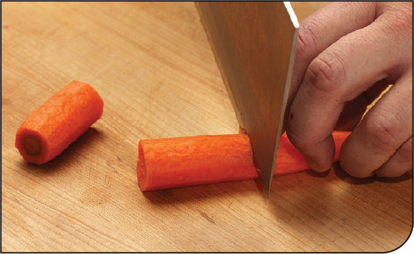
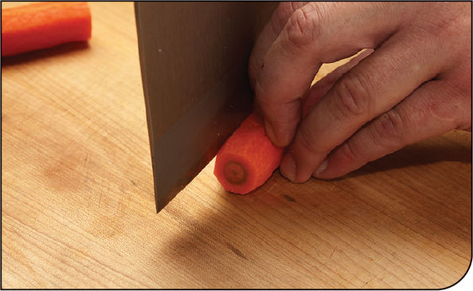
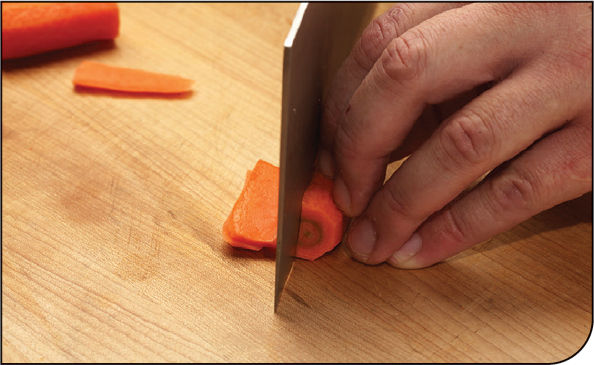
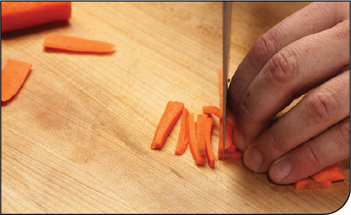
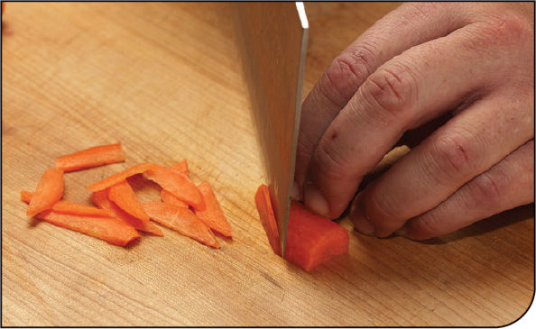

KNIFE SKILLS
How to Cut Carrots, Potatoes, and Other Firm Vegetables for Stir-Fries
In my high school cafeteria and college dining hall, when carrots were stir-fried they were invariably of the frozen crinkle-cut variety, usually prepackaged with broccoli, sliced mushrooms, bell peppers, and the occasional ear of baby corn in a bag labeled “Oriental Mix.” We can do better than that.
Firm vegetables like carrots, potatoes, and bamboo shoots work well in stir-fries when they’re finely shredded into thin, long matchsticks (zucchini also works well sliced and diced). Here’s how to do it.
Step 1 • Peel and Trim

Peel your carrots, then cut them into 2- to 3-inch segments.
Step 2 • Create a Stable Surface

Cut one thin slice lengthwise off the side of each segment with a sharp chef’s knife to create a stable surface for the carrot to rest on.
Step 3 • Cut into Planks

With the carrot resting on its newly cut surface, use a sharp chef’s knife to cut the carrots into ⅛-inch planks. Alternatively, use a Japanese-style mandoline to slice the carrots into ⅛-inch planks.
Step 4 • Cut Matchsticks

Stack a few of the planks together and slice them lengthwise with your chef’s knife to create even matchsticks.

If you don’t have the knife skills (or patience) to cut carrots into matchsticks, just split the carrot in half lengthwise, then cut it on a sharp bias into thin slices. They won’t be quite as pretty, but they’ll cook up just fine.
How to Beat Chile Heat
We’ve all been there. For my uncle, “there” was running away from an ambulance ride he couldn’t afford after waking up on the floor of a Chinese restaurant where he had just requested the chef make him the spiciest dish he could. The heat, coupled with undoubtedly a few too many Tsingtao beers, had knocked him right out. The sirens woke him back up.
For me, “there” was sitting in a friend’s backyard in Colombia—a country where the food is typically quite mild—with a garden hose firmly planted in my mouth after I nonchalantly plucked and bit into a chile I couldn’t identify.
Garden hoses and ambulance sirens are all well and good, but what’s actually the best remedy for beating the heat when it comes to chiles? You’ve undoubtedly heard that milk is better than water, but is it? And why?
Capsaicin, the chemical responsible for chile heat, is hydrophobic. That is, it doesn’t dissolve in water. Fighting fat-soluble capsaicin by drinking plain water is like trying to wash Vaseline off your hands without soap. It just doesn’t work. Milk, especially full-fat milk, will work better (don’t try it with skim!). Cream, even better. In my own personal testing (the sacrifices I make for science!), I found that creamy Greek yogurt was the most pleasant way to fight off too-much chile heat, while swishing a bit of olive oil in my mouth—while not altogether pleasant—was the most effective.